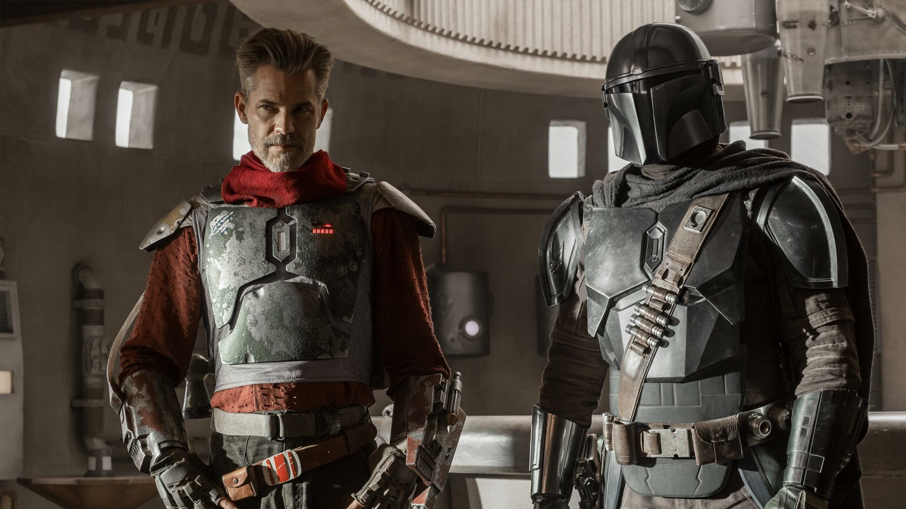
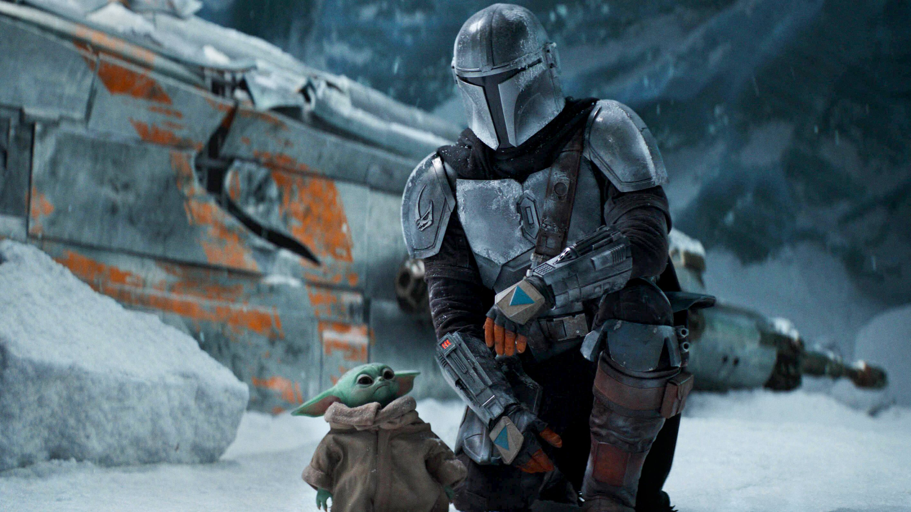
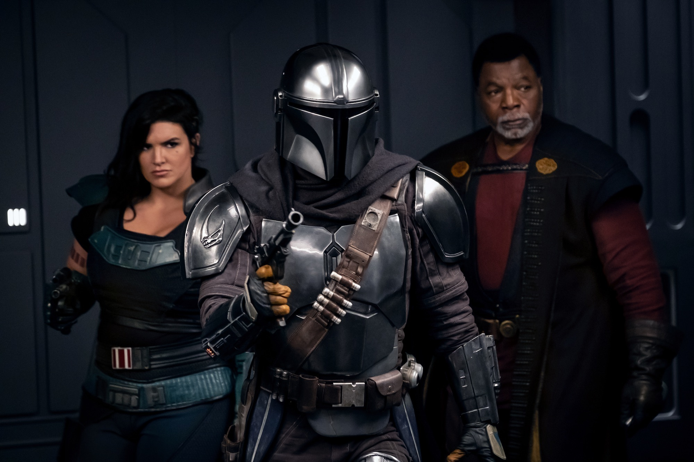
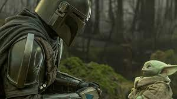
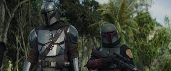
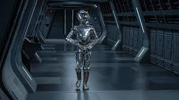

Saison 2
Episode 1 "Le Marshall"
{kind=link}
Le Mandalorien, Din Djarin, est à la recherche d'autres Mandaloriens pour l'aider à retrouver le peuple de l'Enfant (Grogu). Il reçoit une information sur la possible localisation d'un Mandalorien sur la planète Tatooine. En arrivant sur Tatooine, il découvre un marshal portant une armure mandalorienne qui s'avère être celle de Boba Fett, mais celui-ci n'est pas le Mandalorien recherché. Le marshal, Cobb Vanth, a acquis l'armure de Boba Fett et l'utilise pour protéger sa ville contre un dragon Krayt.
Din Djarin et Cobb Vanth décident de collaborer pour tuer le dragon Krayt qui menace la ville. Ils font équipe avec les habitants de la ville, y compris des Tusken Raiders, pour élaborer un plan. Le Mandalorien et Cobb Vanth parviennent à attirer le dragon Krayt hors de sa tanière, et avec l'aide des Tusken Raiders, parviennent à le tuer.
À la fin de l'épisode, le Mandalorien reprend sa quête pour trouver d'autres Mandaloriens et potentiellement le peuple de l'Enfant, laissant derrière lui Cobb Vanth avec l'armure de Boba Fett.
Cet épisode marque le début de la deuxième saison et introduit des éléments clés de l'intrigue tout en explorant davantage l'univers de "The Mandalorian".
Episode 2 "La Passagère"
{kind=link}
Parti de Mos Pelgo à bord de la motojet prêtée par Peli Motto, le Mandalorien est pris en embuscade dans le désert de Tatooine par des bandits. Bien qu'il parvienne à les vaincre, sa motojet est détruite, le contraignant à poursuivre son périple vers Mos Eisley à pied avec tous ses équipements. À Mos Eisley, il retrouve Peli Motto et « Docteur Mandibules » engagés dans une partie de cartes. Ce dernier propose un contact susceptible d'indiquer où trouver d'autres Mandaloriens. Ce contact, une femme d'apparence batracienne, transporte une cargaison précieuse : ses œufs. Selon elle, les semblables de Din Djarin se trouvent dans un système voisin. Cependant, pour obtenir cette information, le Mandalorien doit d'abord transporter la femme vers la lune de Trask, où son mari fertilisera les œufs, les derniers de sa lignée. Le voyage doit se faire à une vitesse subluminique, car l'hyperdrive du Razor Crest risquerait de détruire les œufs. L'Enfant, intrigué par les œufs, en subtilise quelques-uns pour les déguster en chemin.
Pendant le trajet, le vaisseau du Mandalorien est interpellé par deux X-wings de la Nouvelle République pour un contrôle de routine. Cependant, lorsque le Razor Crest émet son transpondeur, les X-wings l'identifient comme étant impliqué dans l'évasion d'un prisonnier (saison 1, épisode 6) et le prennent en chasse. Cherchant à les échapper, le Mandalorien survole une planète glacée, mais le vaisseau subit des dommages importants lorsqu'il atterrit sur une surface instable de glace.
Pendant que Din Djarin effectue des réparations, la femme batracienne trouve un bassin d'eau chaude pour réchauffer ses œufs. L'Enfant découvre des cocons étranges émergeant du terrain glacé, libérant soudainement des araignées des glaces de toutes tailles. Les araignées attaquent, forçant le Mandalorien, la femme batracienne, et l'Enfant à fuir vers le vaisseau endommagé. Malheureusement, une araignée géante bloque le cockpit, empêchant un décollage réussi. Au moment critique, les deux pilotes des X-wings interviennent, repoussant les araignées et annonçant l'arrestation de Din Djarin pour son rôle dans l'évasion. Cependant, après avoir pris en compte ses actions héroïques précédentes, ils décident de le laisser partir. Le Razor Crest décolle de manière précaire, poursuivant son voyage vers la lune de Trask.
Episode 3 "L'Héritière"

Le Mandalorien et sa passagère manquent leur atterrissage dans le port de la lune de Trask, obligeant le Razor Crest en très mauvais état à être repêché. Pour remettre le vaisseau en état, Din Djarin paie un Mon Calamari, puis dépose sa passagère qui retrouve son mari. Dans sa quête pour retrouver d'autres mandaloriens, il obtient un passage sur une embarcation censée le conduire sur une île où ils se trouveraient. Cependant, les marins pêcheurs Quarren, attirés par son armure en Beskar, tentent de l'éliminer avec l'Enfant, jeté dans la gueule d'un monstre aquatique captif du bateau. Heureusement, l'intervention de trois mandaloriens sauve la situation en neutralisant l'équipage et en récupérant l'Enfant. Lorsque Din les remercie et explique sa mission de ramener l'enfant auprès des Jedi, ils retirent leurs casques, révélant ainsi leur identité. Leur chef, Bo-Katan, se présente comme l'héritière du clan Kryze de Mandalore, tandis que Din Djarin, surpris, les considère comme ne suivant pas la voie de Mandalore, qui interdit de retirer le casque en présence d'êtres vivants. Bo-Katan le corrige en expliquant qu'elle vient du clan Death Watch, qu'elle décrit comme une secte de fanatiques.
De retour au port, Din Djarin est attaqué de nuit par une bande dirigée par le frère d'un des membres d'équipage abattus par les Mandaloriens. Bo-Katan et ses acolytes interviennent une fois de plus pour le secourir. Elle lui offre ensuite de l'aider à trouver des Jedi, mais en échange, elle lui demande de les aider à prendre possession d'un cargo impérial rempli d'armes et défendu par des stormtroopers. Les quatre se lancent à l'assaut du vaisseau en vol, parvenant à éliminer tous les stormtroopers. Alors qu'ils se retranchent dans le cockpit, le commandant du cargo est en contact avec Moff Gideon, qui lui ordonne de se sacrifier en provoquant le crash du vaisseau. Les Mandaloriens réussissent de justesse à atteindre le cockpit, évitant ainsi le crash. Bo-Katan maîtrise le commandant de bord et cherche à obtenir des informations sur l'emplacement du sabre noir, clé pour régner sur Mandalore, détenu par Moff Gideon. Cependant, le commandant se suicide en ingérant une capsule. Bo-Katan propose ensuite à Din Djarin de rejoindre son groupe, mais il décline l'offre, affirmant qu'il doit continuer sa quête. Bo-Katan lui indique que la Jedi Ahsoka Tano se trouve à Calodan sur la planète forestière de Corvus, et lui demande de lui transmettre ses salutations lorsqu'il la rencontrera. Din Djarin repart à bord du Razor Crest, mal réparé, informe l'Enfant qu'il sait désormais où le mener, et déclenche un saut dans l'hyperespace.
Episode 4 "Le Siège"
{kind=link}
Le Mandalorien atterrit sur la planète Tython et place l'Enfant sur la pierre du destin, déclenchant un champ de Force. Pendant ce temps, un vaisseau Slave I, piloté par Boba Fett et accompagné de Fennec Shand, arrive sur la planète. Ils demandent au Mandalorien de restituer l'armure qui lui a été offerte par Cobb Vanth. Alors qu'ils négocient, une barge impériale débarque des stormtroopers, ayant suivi la balise du Razor Crest. Les tentatives de Din Djarin pour pénétrer le champ de Force autour de Grogu échouent.
Une bataille s'engage entre les alliés inattendus (Din Djarin, Boba Fett, et Fennec Shand) et les stormtroopers. Boba Fett, récupérant son armure, fait preuve d'une puissance impressionnante et détruit les barges impériales. Cependant, le Razor Crest est pulvérisé par un tir du croiseur impérial de Moff Gideon. Pendant ce temps, Grogu s'endort sur la pierre du destin, mettant fin au champ de Force. Les robots Dark Troopers débarquent, enlèvent Grogu et le transportent jusqu'au croiseur impérial.
Boba Fett, Fennec Shand, et Din Djarin décident de s'associer pour retrouver l'Enfant. Sur Nevarro, ils sollicitent l'aide de la Marshal Cara Dune pour localiser Moff Gideon. À bord du croiseur, Grogu utilise la Force pour se défendre contre les stormtroopers, impressionnant Gideon. Finalement, Grogu s'endort, et Gideon annonce avoir récupéré le "donneur".
Episode 5 "La Jedi"
{kind=link}
Sur la dévastée planète Corvus, Ahsoka Tano, la Jedi, mène une bataille contre l'armée de la magistrate Morgan Elsbeth qui opprime son peuple. Le Mandalorien, Din Djarin, arrive sur Corvus et est recruté par la magistrate pour éliminer Ahsoka en échange d'une lance en Beskar. Accompagné de l'Enfant, Din s'enfonce dans la forêt et rencontre Ahsoka. Ils s'affrontent brièvement jusqu'à ce que Din révèle sa mission de la part de Bo-Katan et explique sa quête.
Ahsoka entre en contact avec l'Enfant par la Force, découvrant son nom, Grogu, et révélant qu'il a été élevé au temple Jedi de Coruscant. Elle refuse d'entraîner Grogu, citant le danger lié à la voie des Jedi. Ensemble, ils décident de vaincre la magistrate et libèrent le village contrôlé par elle. Ahsoka combat la magistrate, Morgan Elsbeth, et obtient des informations sur son maître, le Grand Amiral Thrawn. Din élimine le commandant des forces de la magistrate.
Avec la libération du village, Ahsoka offre la lance en Beskar à Din mais persiste à ne pas entraîner Grogu. Elle informe cependant Din qu'il doit se rendre sur la planète Tython, où se trouvent les ruines d'un temple Jedi. Il doit placer Grogu sur la "pierre du destin" au sommet de la montagne. Si Grogu utilise la Force à cet endroit, un Jedi pourrait ressentir sa présence. Din et Grogu repartent à bord du Razor Crest en direction de Tython, prenant congé d'Ahsoka qui leur souhaite que la Force soit avec eux.
Episode 6 "La Tragédie"

Le Mandalorien, Din Djarin, amène l'Enfant sur la planète Tython et le place sur la pierre du destin. Grogu entre en méditation, créant un champ de Force impénétrable. Pendant ce temps, le Slave I, piloté par Boba Fett et accompagné de Fennec Shand, atterrit. Boba Fett demande à Din de lui rendre son armure en échange de la protection de l'Enfant. Une barge impériale débarque des stormtroopers, forçant Din à abandonner l'Enfant pour affronter la menace.
Fennec Shand et Boba Fett repoussent les stormtroopers, et Boba récupère son armure. Cependant, le Razor Crest est pulvérisé par un tir du croiseur impérial de Moff Gideon. Pendant ce chaos, Grogu est enlevé par les robots Dark Troopers qui l'emmènent au croiseur. Boba Fett tente de les suivre, mais le croiseur saute dans l'hyperespace. Din Djarin considère la dette avec Boba Fett et Fennec Shand comme réglée, mais ils décident d'aider à retrouver l'Enfant.
À bord du Slave I, Din, Boba Fett, Fennec Shand et Cara Dune, la Marshal de la Nouvelle République, cherchent des informations sur Moff Gideon pour sauver Grogu. À bord du croiseur, Grogu utilise la Force contre les stormtroopers, impressionnant Gideon. Cependant, il est finalement capturé et Moff Gideon annonce avoir récupéré le "donneur" au Dr Pershing.
Episode 7 "Le Repenti"
{kind=link}
L'épisode commence sur la planète Karthon, une décharge où des prisonniers travaillent sous la surveillance d'un droïde. Sur Nevarro, Din Djarin cherche l'ex-tireur d'élite impérial, Migs Mayfeld, prisonnier désormais. Avec l'aide de Cara Dune, ils libèrent Mayfeld pour qu'il les aide à localiser le croiseur impérial de Moff Gideon. À bord du Slave I piloté par Boba Fett, l'équipe se rend sur Morak, une planète tropicale avec une raffinerie clandestine de Rhydonium, une matière explosive.
Din, Mayfeld, Cara, et Fennec Shand s'infiltrent dans la raffinerie en volant un véhicule transportant du Rhydonium. Pour éviter d'être repérés, Din se sépare de son armure en Beskar et enfile un uniforme impérial. En route, ils sont attaqués par des pirates, mais les ennuis augmentent lorsqu'ils sont secourus par des chasseurs TIE et des stormtroopers. À l'intérieur de la raffinerie, Din et Mayfeld localisent le terminal impérial dans le mess des officiers. Cependant, Mayfeld reconnaît un ancien supérieur et refuse d'être reconnu.
Din Djarin, enlevant son casque pour utiliser le terminal, collecte les informations nécessaires. L'officier impérial les invite à boire avec lui, et Mayfeld abat l'officier lorsqu'il exprime son soutien à l'Opération Cendre, un massacre auquel Mayfeld a participé. Les deux s'échappent de la raffinerie avec l'aide de Cara Dune et Fennec Shand. Boba Fett les récupère, et Mayfeld est laissé libre après que Cara Dune déclare qu'il est mort dans l'explosion de la raffinerie. Din Djarin envoie un message menaçant à Moff Gideon, réclamant la sécurité de l'Enfant.
L'épisode s'ouvre sur une décharge sur la planète Karthon, où des prisonniers travaillent sous la surveillance d'un droïde. Sur Nevarro, Din Djarin cherche l'ex-tireur d'élite impérial Migs Mayfeld, désormais prisonnier (le détenu 3-4-6-6-7), pour l'aider à localiser le croiseur impérial de Moff Gideon. Avec l'aide de Cara Dune, ils libèrent Mayfeld de sa cellule. À bord du Slave I piloté par Boba Fett, Din, Cara, et Fennec Shand emmènent Mayfeld pour une mission.
Mayfeld, qui connaît une base impériale sur la planète Morak, propose de s'infiltrer pour accéder à un terminal impérial et obtenir les informations nécessaires. Sur Morak, une planète tropicale avec une raffinerie clandestine exploitant le Rhydonium, Din, Mayfeld, et un transporteur impérial volé atteignent la raffinerie. Din enlève son armure en Beskar et se déguise en chauffeur impérial, tandis que Mayfeld fait de même. En route vers la raffinerie, ils sont attaqués par des pirates.
Les pirates tentent de faire exploser le Rhydonium, mais Din parvient à les repousser. Cependant, ils sont secourus par des chasseurs TIE et des stormtroopers impériaux. À l'intérieur de la raffinerie, Din et Mayfeld localisent le terminal impérial dans le mess des officiers. Mayfeld reconnaît son ancien supérieur, Valin Hess, et refuse de se faire reconnaître. Din enlève son casque pour accéder au terminal et collecte les informations nécessaires.
L'officier impérial, Valin Hess, les invite à boire un verre, et Mayfeld, énervé par ses souvenirs de l'Opération Cendre, le tue. Din et Mayfeld s'échappent avec l'aide de Cara Dune et Fennec Shand. Boba Fett les récupère sur le Slave I. Mayfeld est laissé libre après que Cara Dune annonce qu'il est mort dans l'explosion de la raffinerie. Din envoie un message menaçant à Moff Gideon, affirmant qu'il récupérera l'Enfant.
L'épisode commence sur la planète Karthon, une décharge où des prisonniers travaillent sous la surveillance d'un droïde. Sur Nevarro, Din Djarin cherche l'ex-tireur d'élite impérial Migs Mayfeld, désormais prisonnier (le détenu 3-4-6-6-7), pour l'aider à localiser le croiseur impérial de Moff Gideon. Avec l'aide de Cara Dune, ils libèrent Mayfeld de sa cellule. À bord du Slave I piloté par Boba Fett, Din, Cara, et Fennec Shand emmènent Mayfeld pour une mission.
Mayfeld, qui connaît une base impériale sur la planète Morak, propose de s'infiltrer pour accéder à un terminal impérial et obtenir les informations nécessaires. Sur Morak, une planète tropicale avec une raffinerie clandestine exploitant le Rhydonium, Din, Mayfeld, et un transporteur impérial volé atteignent la raffinerie. Din enlève son armure en Beskar et se déguise en chauffeur impérial, tandis que Mayfeld fait de même. En route vers la raffinerie, ils sont attaqués par des pirates.
Les pirates tentent de faire exploser le Rhydonium, mais Din parvient à les repousser. Cependant, ils sont secourus par des chasseurs TIE et des stormtroopers impériaux. À l'intérieur de la raffinerie, Din et Mayfeld localisent le terminal impérial dans le mess des officiers. Mayfeld reconnaît son ancien supérieur, Valin Hess, et refuse de se faire reconnaître. Din enlève son casque pour accéder au terminal et collecte les informations nécessaires.
L'officier impérial, Valin Hess, les invite à boire un verre, et Mayfeld, énervé par ses souvenirs de l'Opération Cendre, le tue. Din et Mayfeld s'échappent avec l'aide de Cara Dune et Fennec Shand. Boba Fett les récupère sur le Slave I. Mayfeld est laissé libre après que Cara Dune annonce qu'il est mort dans l'explosion de la raffinerie. Din envoie un message menaçant à Moff Gideon, affirmant qu'il récupérera l'Enfant.
Episode 8 "Le Sauvetage"
{kind=link}
L'épisode débute avec le docteur Pershing à bord d'une navette impériale en route vers le croiseur de Moff Gideon. Cependant, la navette est attaquée par le Slave 1 piloté par Boba Fett, qui désactive le vaisseau avec un canon ionique. Les pilotes impériaux sont éliminés, et Pershing est capturé. L'équipe formée par Boba Fett, Fennec Shand, Cara Dune et le Mandalorien récupère la navette pour obtenir des informations sur la localisation de Grogu.
Ils se rendent sur une planète où le Mandalorien retrouve Bo-Katan et Koska Reeves. Din Djarin demande de l'aide à Bo-Katan pour affronter Moff Gideon et récupérer l'Enfant. Bo-Katan accepte sous certaines conditions, notamment celle de prendre possession du croiseur de Moff Gideon. Le docteur Pershing les aide à élaborer un plan en révélant la disposition du croiseur, l'emplacement de Grogu, et la présence des redoutables droïdes Dark Troopers.
L'équipe met en scène une attaque devant le croiseur, avec le Slave 1 en poursuite de la navette. Ils parviennent à accoster et entrent dans le croiseur. Pendant que Bo-Katan, Cara Dune, Fennec Shand et Koska Reeves se dirigent vers la passerelle de commandement, le Mandalorien libère Grogu et affronte les Dark Troopers. Juste à temps, il parvient à les expulser dans l'espace.
L'équipe féminine atteint la passerelle de commandement, mais Moff Gideon n'y est pas. Din Djarin découvre Gideon dans la cellule de Grogu. Gideon explique qu'il n'a plus besoin de l'Enfant car il a collecté son sang aux propriétés spéciales. Alors que Din Djarin s'apprête à récupérer Grogu, Gideon l'attaque. Après un combat, Din Djarin prend le dessus, récupère Grogu et le sabre noir, et amène Gideon prisonnier sur la passerelle.
Din Djarin veut remettre le sabre à Bo-Katan, mais elle ne peut pas le prendre, car il faut le gagner en combat. Din Djarin est désormais le propriétaire involontaire du sabre laser noir. Les Dark Troopers reviennent, et juste au moment où ils vont envahir la passerelle, un X-Wing arrive. Un Jedi en sort, utilise la Force et son sabre laser vert pour détruire les Dark Troopers. Luke Skywalker révèle son visage, expliquant qu'il doit former Grogu. Après des adieux émotionnels, Luke part avec Grogu.
Dans la scène post-générique, Boba Fett et Fennec Shand prennent le contrôle du palais de Jabba le Hutt sur Tatooine. Bib Fortuna est éliminé, et Boba Fett s'installe sur le trône. Une nouvelle série dérivée est annoncée : "Le Livre de Boba Fett", prévue pour décembre 2021.